Irving Fang
contact-rich manipulation · perception · hardware
I am a Computer Science PhD candidate at New York University, advised by Prof. Chen Feng. I also collaborate closely with Prof. Yunzhu Li at Columbia University.
I obtained my bachelor's degree from UC Berkeley, double majoring in Data Science (Robotics Emphasis) and Mathematics, with minors in Japanese Literature and EECS. At UC Berkeley I was fortunate enough to work with Prof. Alice Agogino at her BEST Lab and Squishy Robotics.
I am currently at Amazon Frontier AI & Robotics as a Member of Technical Staff Intern. In the past, I have interned at Analog Devices and Mitsubishi Electric Research Laboratories, mostly working on some combination of tactile sensing, reinforcement learning, imitation learning and so on in the context of robotics.
In my free time, I am a hardware hobbyist who enjoys playing with MCUs, FPGAs and 3D printing. I am also a fan of industrial/clothing/jewelry design.
Research
At the broadest level, my research lies at the intersection of robotics, computer vision, and machine learning.
I am particularly interested in contact-rich manipulation: can we make robots as dexterous, adaptive, and efficient as humans when interacting with objects, the environment, or even other people through contact?
I would like to approach this problem with a diverse toolbox, including deep learning, tactile sensing, model predictive control, vision-language models, hardware design, simulation, and even emerging approaches like neuromorphic computing.
In my free time, I also contribute my computational skills to scientific research in other fields such as anthropology.
For collaboration, click here
Thank you for your interest in collaborating! Please don't hesitate to shoot me an email.
For Undergrad/MS students, please additionally send me a link to a Github repo that you feel proudest of. I am especially impressed by students with the habit of writing clean, well-documented code. You can also consider filling out our lab's recruiting form so more PhD students can get to know you.
Publications
-
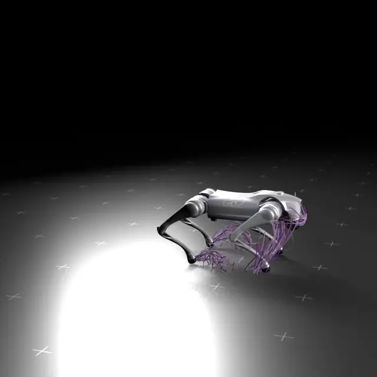
RA-L 2026 (under review)
Signal-MPC: Entropy-Constrained Sampling MPC via Natural Gradients
project page arXiv code permalink
Sampling MPC as natural gradient descent: adapt the sampling distribution online, and keep exploration alive with an entropy floor.
-
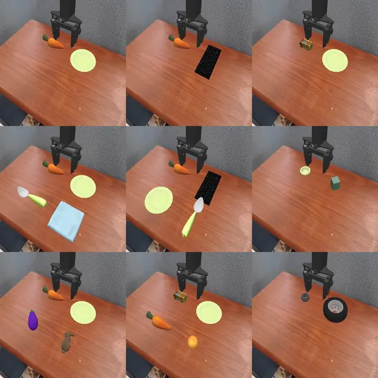
arXiv 2025
From Intention to Execution: Probing the Generalization Boundaries of Vision-Language-Action Models
project page arXiv code permalink
Can your VLA generalize like a VLM? INT-ACT may give you some clue.
-
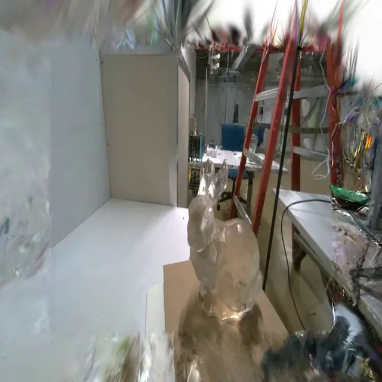
ICRA 2025
FusionSense: Bridging Common Sense, Vision, and Touch for Robust Sparse-View Reconstruction
project page arXiv code permalink
Robot reconstructing visually and geometrically accurate surroundings with sparse visual and tactile data.
-
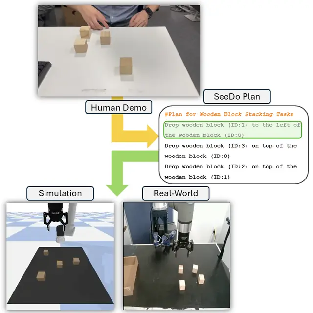
IROS 2025
VLM See, Robot Do: Human Demo Video to Robot Action Plan via Vision Language Model
project page arXiv code permalink
Let the robot follow a human's actions by just watching one video.
-
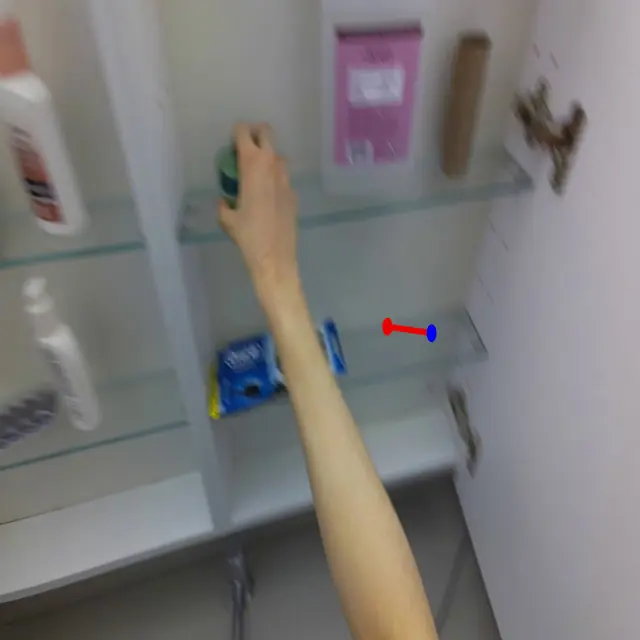
ICRA 2024
EgoPAT3Dv2: Predicting 3D Action Target from 2D Egocentric Vision for Human-Robot Interaction
project page arXiv code permalink
Human-robot interaction for a potentially AR world?
-
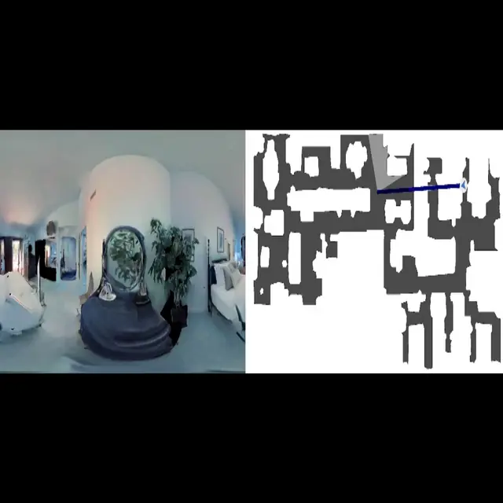
RSS 2023
DeepExplorer: Metric-Free Exploration for Topological Mapping by Task and Motion Imitation in Feature Space
project page arXiv code permalink
A simple and effective framework for efficient and lightweight active visual exploration with only RGB images as input.
-
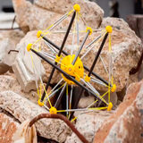
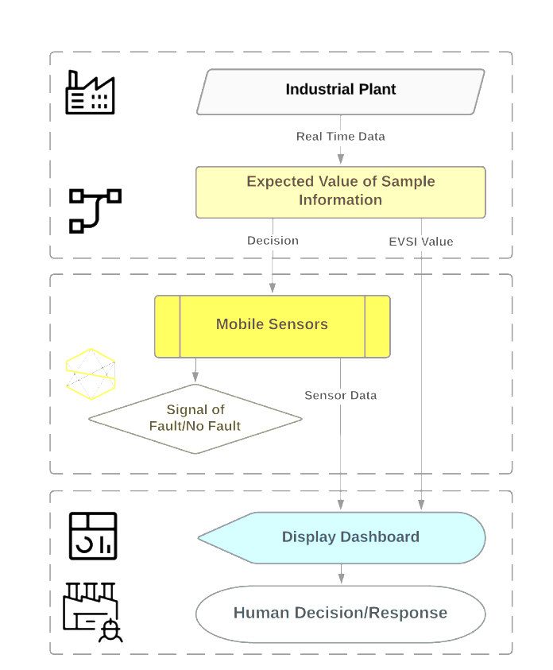
ASME IMECE 2021
Dynamic Placement of Rapidly Deployable Mobile Sensor Robots Using Machine Learning and Expected Value of Information
A framework for optimizing the deployment of emergency sensors using Long Short-Term Memory (LSTM) Neural Network and Expected Value of Information (EVI).
-
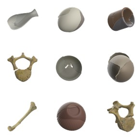
ICCV 2025
GARF: Learning Generalizable 3D Reassembly for Real-World Fractures
project page arXiv code permalink
Shedding light on training on synthetic data to advance real-world 3D fracture assembly.
-
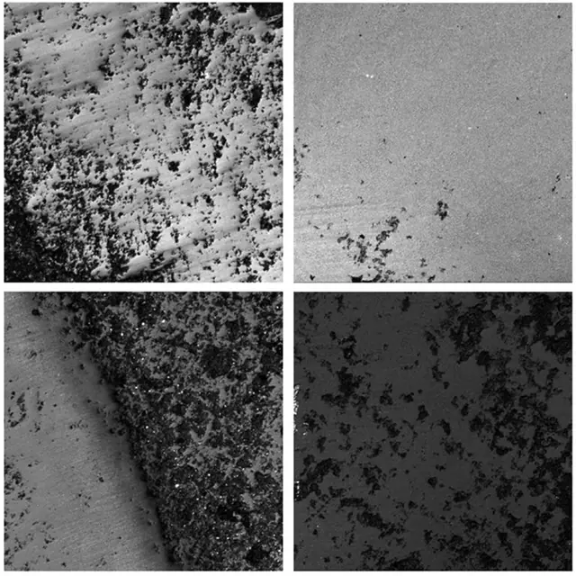
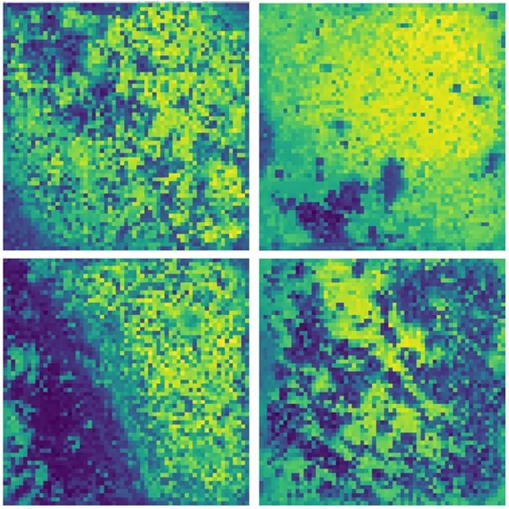
CVPR 2024 · Highlight (11.9% of 2719 accepted papers)
LUWA Dataset: Learning Lithic Use-Wear Analysis on Microscopic Images
project page arXiv code permalink
Paleoanthropology meets cutting-edge computer vision. We create the first Lithic Use-Wear Analysis (LUWA) dataset and challenge Large Vision Model and Large Language and Vision Model with it.
Personal Projects
Please visit this repo. It contains pointers to some personal projects ranging from robotics to a RISC-V CPU implemented on a Xilinx FPGA board.
Teaching
- Teaching Aide, ROB-UY 3203 Robot Vision Spring 2022, 2023, 2025
- Teaching Aide, ROB-GY 6203 Robot Perception Fall 2022, 2023, 2025
Service
- Reviewer, NeurIPS 2025
- Reviewer, RA-L 2025
- Reviewer, ICRA 2024, ICRA 2025
- Reviewer, IROS 2025
- Reviewer, DARS 2024